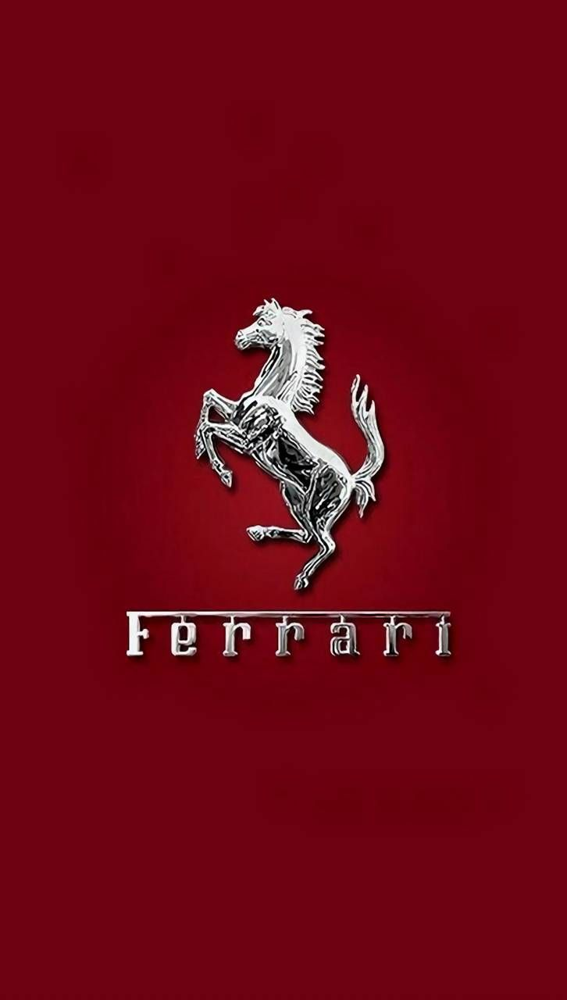
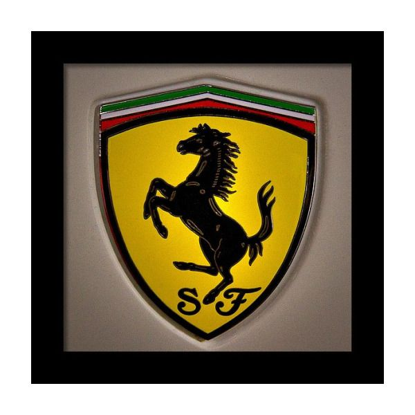

ferrari
information about ferrari
The famous symbol of the Ferrari race team is the Cavallino Rampante ("prancing horse") black prancing stallion on a yellow shield, usually with the letters S F (for Scuderia Ferrari), with three stripes of green, white and red (the Italian national colors) at the top. The road cars have a rectangular badge on the hood (see picture at top of page), and, optionally, the shield-shaped race logo on the sides of both front wings, close to the door. On 17 June 1923, Enzo Ferrari won a race at the Savio track in Ravenna where he met Countess Paolina, mother of Count Francesco Baracca, an ace of the Italian air force and national hero of World War I, who used to paint a horse on the side of his planes. The Countess asked Enzo to use this horse on his cars, suggesting that it would bring him good luck. The original "prancing horse" on Baracca's airplane was painted in red on a white cloud-like shape, but Ferrari chose to have the horse in black (as it had been painted as a sign of grief on Baracca's squadron planes after the pilot was killed in action) and he added a canary yellow background as this is the color of the city of Modena, his birthplace. The Ferrari horse was, from the very beginning, markedly different from the Baracca horse in most details, the most noticeable being the tail that in the original Baracca version was pointing downward. Ferrari has used the cavallino rampante on official company stationery since 1929. Since the Spa 24 Hours of 9 July 1932, the cavallino rampante has been used on Alfa Romeos raced by Scuderia Ferrari. The motif of a prancing horse is old, it can be found on ancient coins. A similar black horse on a yellow shield is the coat of arms of the German city of Stuttgart, home of Mercedes-Benz and the design bureau of Porsche, both being main competitors of Alfa and Ferrari in the 1930s. The city's name derives from Stutengarten, an ancient form of the German word Gestüt, which translates into English as stud farm and into Italian as scuderia. Porsche also includes the Stuttgart sign in its corporate logo, centred in the emblem of the state of Württemberg. Stuttgart's Rössle has both rear legs firmly planted on the soil, like Baracca's horse, but unlike Ferrari's cavallino.
market value of ferrari
Ferrari S.p.A. (/fəˈrɑːri/; Italian: [ferˈraːri]) is an Italian luxury sports car manufacturer based in Maranello, Italy. Founded by Enzo Ferrari in 1939 out of the Alfa Romeo race division as Auto Avio Costruzioni, the company built its first car in 1940, and produced its first Ferrari-badged car in 1947. Fiat S.p.A. acquired 50% of Ferrari in 1969 and expanded its stake to 90% in 1988.[4] In October 2014, Fiat Chrysler Automobiles (FCA) announced its intentions to separate Ferrari S.p.A. from FCA; as of the announcement FCA owned 90% of Ferrari.[5][6][7] The separation began in October 2015 with a restructuring that established Ferrari N.V. (a company incorporated in the Netherlands) as the new holding company of the Ferrari S.p.A. group,[8] and the subsequent sale by FCA of 10% of the shares in an IPO and concurrent listing of common shares on the New York Stock Exchange.[9] Through the remaining steps of the separation, FCA's interest in Ferrari's business was distributed to shareholders of FCA, with 10% continuing to be owned by Piero Ferrari.[10] The spin-off was completed on 3 January 2016.[9] Throughout its history, the company has been noted for its continued participation in racing, especially in Formula One, where it is the oldest and most successful racing team, holding the most constructors championships (16) and having produced the highest number of drivers' championship wins (15).[11] Ferrari road cars are generally seen as a symbol of speed, luxury and wealth.[12] Ferrari cars are built at the 165,000 square-meter (16.5-hectare) Maranello factory.[13] In 2014 Ferrari was rated the world's most powerful brand by Brand Finance.[14] In June 2018, a 1963 250 GTO became the most expensive car in history, setting an all-time record selling price of $70 million.[15][16] As of 2021, Ferrari is the 10th-largest car manufacturer by market capitalisation, with $52.21 billion.[17]